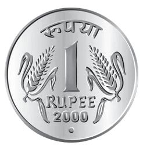
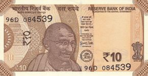
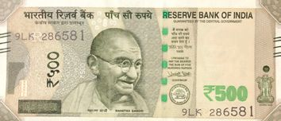
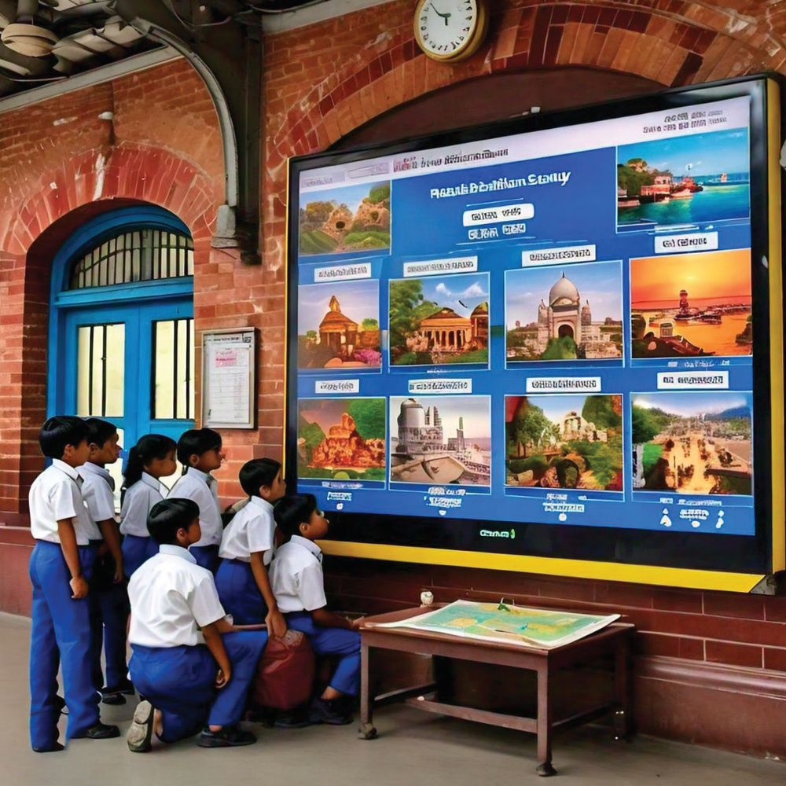
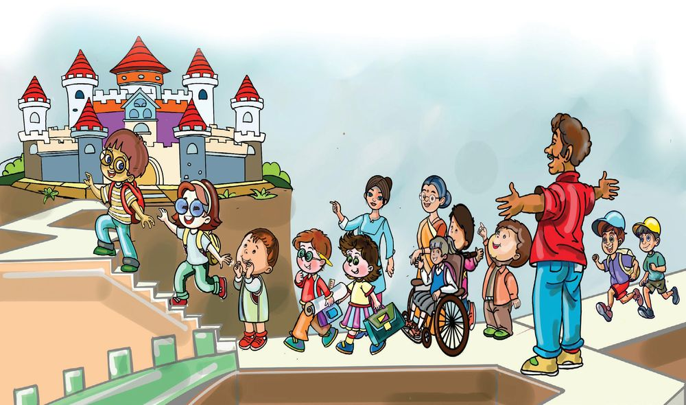

3
എത്രയെത്ര സംഖ്യയകൾ
മിത്രയ്ക്കും കൂട്ടുകാർക്കും ഇന്ന് പഠനയാത്രയാണ്. എറണാകുളത്തേക്കാണ് യാത്ര. ട്രെയിനിലാണ് പോോകുന്നത്.
3
എത്രയെത്ര സംഖ്യയകൾ
മിത്രയ്ക്കും കൂട്ടുകാർക്കും ഇന്ന് പഠനയാത്രയാണ്. എറണാകുളത്തേക്കാണ് യാത്ര. ട്രെയിനിലാണ് പോോകുന്നത്.







ഗണിതം സ്റ്റാൻഡേർഡ് - IV
റെയിൽവേ സ്റ്റേഷനിൽ... ട്രെയിൻ യാത്രയ്ക്ക് ടിക്കറ്റെടുക്കാനായി കൊൊടുത്ത നോോട്ടുകളുംം നാണയങ്ങളുംം നോോക്കൂ. ആകെ എത്ര രൂപ കൊാടുത്തു ?
ആകെ രൂപ 36


എത്രയെത്ര സംഖ്യയകൾ
ടൂറിസ്റ്റ് കേന്ദ്രത്തിലേക്ക് റെയിൽവേസ്റ്റേഷനിലെ ഒരു ബോോർഡ് നോോക്കൂ. ഇതിൽ എറണാകുളത്ത് നിന്നും ഇന്ത്യയയിലെ വിവിധ ടൂറിസ്റ്റ് കേന്ദ്രങ്ങളിലേക്കുള്ള ദൂരം എഴുതിയി രിക്കുന്നു.
സ്ഥലം
ദൂരം
ഹിൽപാലസ്
11 കിമീ
ഗോോവ
744 കിമീ
മൈസൂർ
385 കിമീ
കന്യാാകുമാരി
307 കിമീ
ഹൈദ്രാബാദ് ഫിലിംസിറ്റി
1112 കിമീ
റെഡ്ഫോോർട്ട്
2592 കിമീ
താജ്മഹൽ
2424 കിമീ
ഏറ്റവും അകലെയുള്ള ടൂറിസ്റ്റ് കേന്ദ്രം ഏതാണ് ? ഏറ്റവും അടുത്തുള്ളതോോ ?
അകലെയുള്ളതിൽ നിന്നും അടുത്തുള്ളതിലേക്ക് എന്ന ക്രമത്തിൽ എഴുതൂ. സ്ഥലം
ദൂരം
37


ഗണിതം സ്റ്റാൻഡേർഡ് - IV
കൊൊട്ടാരത്തിൽ നമുക്ക് മറുവശത്തുകൂടി കയറാം. അവിടെ റാമ്പ് ഉണ്ട്.
കൊൊട്ടാരത്തിൽ കയറാനായി കുട്ടികൾ വരിയായി നിൽക്കുകയാണ്. അവരുടെ ടിക്കറ്റുകളിൽ തുടർച്ചയായ നമ്പറാണ് ഉള്ളത്. ഒന്നാമത് നിൽ ക്കുന്ന മിത്രയുടെ നമ്പർ 2986. സാന്ദ്രയുടെ നമ്പർ 3010.
മിത്ര മുതൽ സാന്ദ്ര വരെ വരിയിൽ എത്ര പേരുണ്ട് ?
സാന്ദ്രയുടെ മുന്നിൽ നിൽക്കുന്ന ഇഷാൻ്റെ നമ്പർ എന്താണ് ?
3010ൻ്റെ മുന്നിലും പിന്നിലുമുള്ളവരുടെ നമ്പർ എഴുതൂ.
3010ൻ്റെ പിന്നിലുള്ള നമ്പറിൽ തുടങ്ങി 20-ാമത്തെ ടിക്കറ്റ് നമ്പർ
എന്താണ് ?
വരിയിൽ 15-ാമത് നിൽക്കുന്ന മജുവിന്റെ നമ്പർ എഴുതൂ
2986 മുതൽ 3010 വരെയുള്ള നമ്പർ തുടർച്ചയായി എഴുതൂ.
38


എത്രയെത്ര സംഖ്യയകൾ
വാട്ടർമെട്രോോ കൊൊട്ടാരം കണ്ടതിന് ശേഷം കുട്ടികൾ വാട്ടർമെട്രോോയിൽ കയറി.
വാട്ടർമെട്രോോയിൽ കയറിയവർക്ക് ഭക്ഷണക്കൂപ്പൺ കിട്ടി. മിത്രയുടെ ഗ്രൂപ്പിന് കിട്ടിയ കൂപ്പണിലെ നമ്പർ 8000നും 9000നും ഇടയിലുള്ളതാണ്. അക്കങ്ങളുടെ തുക 10 വരുന്നതുമാണ്. മിത്രയ്ക്കും കൂട്ടുകാർക്കും കിട്ടിയ കൂപ്പൺ നമ്പർ ഏതൊൊക്കെയെന്ന് എഴുതുക ? പസിൽ കോർണർ AAB +
അക്കങ്ങളുടെ തുക
7000 ത്തിനും 8000 ത്തിനും ഇടയിൽ അക്കങ്ങ ളുടെ തുക 10 വരുന്ന എത്ര സംഖ്യയകളുണ്ട് ?
നോോട്ടുബുക്കിൽ എഴുതൂ.
A BCCC A = ............. B = ............. C = .............
39


ഗണിതം സ്റ്റാൻഡേർഡ് - IV
പ്രദർശന നഗരിയിലേക്ക് കുട്ടികളുടെ പാർക്കിലെ പ്രദർശനം കാണാൻ എത്തുന്നവർക്ക് സമ്മാന ക്കൂപ്പൺ കിട്ടുംം. നറുക്കെടുപ്പിലൂടെ യാണ് സമ്മാനം തീരുമാനിക്കുന്നത്. കുട്ടികളെല്ലാം സമ്മാനക്കൂപ്പണുമായി സ്ക്രീനിന്റെ മുന്നിൽ നമ്പർ തെളിയു ന്നതും നോോക്കി നിന്നു. ഓരോോ സ്ഥാനവും കറങ്ങി സ്ക്രീനിൽ തെളിയുന്ന നമ്പർ എഴുതൂ. 10000
പതിനായിരം
11000
..................
..................
..................
..................
..................
എത്ര നാലക്കസംഖ്യയകൾ? 9, 0 എന്നീ അക്കങ്ങൾ മാത്രം
ഉപയോോഗിച്ച് എത്ര നാലക്ക സംഖ്യയ കൾ ഉണ്ടാക്കാം? അവ ഏതെല്ലാം?
മീരയുടെ നമ്പർ എത്രയാണ്?
9000
അവയെ വലുതിൽ നിന്നും ചെറുതിലേക്ക് എഴുതുക.
40
അക്കങ്ങ ളുടെ തുക 5 ആയാൽ സമ്മാനം
സമ്മാനം കിട്ടിയ നമ്പർ

എത്രയെത്ര സംഖ്യയകൾ
സംഖ്യയകൾ ആദ്യയത്തെ സംഖ്യയപോാലെ മറ്റു സംഖ്യയകളുംം എഴുതൂ... • 5 ആയിരം 4 നൂറ് 3 പത്ത് 2 ഒന്ന് 54 നൂറ് 32 ഒന്ന് -
5432
5432 ഒന്ന് -
.................. .................. ..................
• 82 നൂറ് - 820 പത്ത് - 8200 ഒന്ന് -
.................. .................. ..................
543 പത്ത് 2 ഒന്ന് -
• 7104
........ ആയിരം ........ നൂറ് ........ പത്ത് ........ ഒന്ന്
........ നൂറ് ........ ഒന്ന്
........ ആയിരം ....... ഒന്ന്
........ ആയിരം ........ പത്ത് ........ ഒന്ന്
സംഖ്യാചക്രം ചക്രം പൂർത്തിയാക്കൂ. ... ..... ് ഒന്ന്
.... ..... .... ആ ..... ... പത്ത് യി ... ിരം ഒന്ന് ് ്
........ ആയിരം ........ ഒന്ന്
....... നൂറ് ....... ഒന്ന് ....... ഒന്ന്
5633
....... നൂറ് ....... പത്ത് ....... ഒന്ന്
5
..... ആയി 3 ... നൂ ിരം ..... പത്ത് ൂറ് ... ഒന്ന് ് ് ........ ആയിരം ........ നൂറ് ........ ഒന്ന്
.. ..... ് പത്ത്...... ് . ഒന്ന്
41

ഗണിതം സ്റ്റാൻഡേർഡ് - IV
പിരിച്ചെഴുതാം എത്ര ഒന്ന് ? എത്ര പത്ത് ? എത്ര നൂറ് ?
10000
പത്ത് ആയിരം പതിനായിരം ഒന്ന് ആയിരം പത്ത് നൂറ് നൂറ്
ചുവടെ കൊൊടുത്തിരിക്കുന്നവയും ഇതുപോോലെ പൂർത്തിയാക്കുക. ............... ഒന്ന് ............... പത്ത് ............... നൂറ് ............... ആയിരം
6700
13000 പസിൽ കോാർണർ ഞാനാര് ? 6 നൂറ് 6 പത്ത് 6 ആയിരം 6 ഒന്ന്
.............................. .............................. ..............................
എറണാകുളം - അമൃത്സർ യാത്ര എറണാകുളത്ത് നിന്ന് അമൃത്സർ വരെ പോോകുന്ന ട്രെയിൻ നിർത്തുന്ന ചില സ്റ്റേഷനുകളുംം ദൂരവുമാണ് ചുവടെ കൊൊടുത്തിരിക്കുന്നത്. പട്ടിക നോോക്കി എറണാകുളത്തുനിന്നും പുറപ്പെടുന്ന ട്രെയിൻ ആദ്യംം നിർത്തുന്ന സ്റ്റേഷൻ ഏതെന്ന് എഴുതുക. തുടർന്ന് നിർത്തുന്ന മറ്റു സ്റ്റേഷനുകളുംം ദൂരവും ക്രമത്തിലെഴുതുക. സ്റ്റേഷൻ
ദൂരം
കാസറഗോോഡ്
368 കിമീ
മംഗളൂരു
415 കിമീ
കോോഴിക്കോോട്
193 കിമീ
അമൃത്സർ
3092 കിമീ
സൂററ്റ്
1522 കിമീ
ന്യൂഡൽഹി
2643 കിമീ
ലുധിയാന
2956 കിമീ
42
സ്റ്റേഷൻ
ദൂരം


എത്രയെത്ര സംഖ്യയകൾ
ക്രമം തുടരൂ • • • •
10050, 10051, 10052, ................, ................, ................ 11085, 11086, 11087, ................, ................, ............... 19995, 19996, 19997, ................, ................, ................ 12320, 12340, 12360, ................, ................, ................
ഞാൻ കണ്ടുപിടിച്ചത്
വിമാനത്തിലേക്ക് വിനോോദയാത്ര കഴിഞ്ഞ് കുട്ടികൾ മടങ്ങുന്നത് വിമാനത്തിലാണ്. വിമാന ത്താവളത്തിൽ വരികയും പോോകുകയും ചെയ്യുന്ന വിമാനങ്ങളുടെ നമ്പറു കൾ സ്ക്രീനിൽ എഴുതിക്കാണിക്കുന്നുണ്ട്. വിമാനത്തിന്റെ നമ്പർ ഒരു നാലക്ക സംഖ്യയ യാണ് നമ്മുടെ വിമാനത്തിന്റെ നമ്പർ എത്രയാണ് ?
വിമാനത്തിന്റെ നമ്പർ എഴുതുക
ആയിരത്തിന്റെയും നൂറിന്റെയും സ്ഥാ നത്തെ അക്കങ്ങൾ ചേർന്ന സംഖ്യയയുടെ ഇരട്ടിയാണ് നൂറിന്റെ യും പത്തിന്റെയും സ്ഥാനത്തെ അക്ക ങ്ങൾ ചേർന്ന സംഖ്യയ
നൂറിന്റെയും പത്തി ന്റെയും സ്ഥാനത്തെ അക്കങ്ങൾ ചേർന്ന സംഖ്യയയുടെ ഇരട്ടിയാ ണ് പത്തിന്റെയും ഒന്നി ന്റെയും സ്ഥാനത്തെ അക്കങ്ങൾ ചേർന്ന സംഖ്യയ
43


ഗണിതം സ്റ്റാൻഡേർഡ് - IV
റോാമൻ സംഖ്യയകൾ ക്ലോോക്ക് നോോക്കൂ. ഉണ്ടല്ലോാ. അത് റോോമൻ സംഖ്യയകളാണ്.
ഈ ക്ലോോക്കിൽ സംഖ്യയകൾ ഇല്ലല്ലോോ?
I
റോോമൻ സംഖ്യയകൾ
- 1
VII - 7
II - 2
VIII - 8
III - 3
IX
- 9
IV - 4
X
- 10
V - 5
XI
- 11
VI - 6
XII - 12
അബാക്കസിലെ സംഖ്യയകൾ അബാക്കസ് നോാക്കൂ.
പതിനായിരം ആയിരം നൂറ്
പത്ത്
ഒന്ന്
• ഇതിൽ 2 മുത്തുകൾ മാത്രം ഉപയോാഗിച്ച് ഉണ്ടാക്കാവുന്ന എല്ലാ അഞ്ചക്ക സംഖ്യയ കളുംം എഴുതുക.
എത്ര നൂറുകൾ ? • 1 മുതൽ 5 വരെയുള്ള അക്കങ്ങൾ ആവർത്തിക്കാതെ അവ ഉപയോാഗിച്ച് എഴുതാവുന്ന ഏറ്റവും വലിയ അഞ്ചക്ക സംഖ്യയയും ഏറ്റവും ചെറിയ അഞ്ചക്ക സംഖ്യയയും എഴുതുക. • വലിയ സംഖ്യയയിൽ എത്ര നൂറ് ? • ചെറിയ സംഖ്യയയിൽ എത്ര നൂറ് ? 44

എത്രയെത്ര സംഖ്യയകൾ
1. പൂരിപ്പിക്കുക
• 9875
- 9 ആയിരം, ................ നൂറ്, ................ പത്ത്, ................ ഒന്ന്
• 6307
- ........ ആയിരം, ............... പത്ത്, ............... ഒന്ന്
• 4218
- ................ നൂറ്, ................ ഒന്ന്
• ...............- 5 ആയിരം, 6 നൂറ്, 0 പത്ത്, 8 ഒന്ന് • ...............- 8 ആയിരം, 12 പത്ത്, 0 ഒന്ന് • ...............- 16 നൂറ്, 25 ഒന്ന് 2.
3.
6315 എന്ന സംഖ്യയയിൽ 6 എന്ന അക്കത്തിന്റെ വില 6000 ആണ്. താഴെകൊൊടുത്ത സംഖ്യയകളിൽ 3 എന്ന അക്കത്തിന്റെ വില എഴുതൂ. 8573
...........................
7835
............................
3578
............................
5379
............................
ട്രെയിനിൽ തിരുവനന്തപുരത്തുനിന്നും എറണാകുളത്തേക്കുള്ള ടിക്കറ്റ് ചാർജ് ആകെ 3625 രൂപയാണ്. കുട്ടികൾക്കുള്ള ഇളവ് കുറച്ച് 2000 രൂപ മാത്രമാണ് കൊാടുത്തത്. ഇളവ് എത്ര രൂപയാണ് ?
4. ഒഴിഞ്ഞ കളങ്ങളിൽ സംഖ്യയകൾ എഴുതൂ.
486 301
•
185 829
1000 555
556
സംഖ്യയകൾ ആവർത്തിക്കാതെ 8 ൽ എത്തുക.
920 618
743 8
45


ഗണിതം സ്റ്റാൻഡേർഡ് - IV
5.
ഒരു വരിയിൽ 27 പേരുണ്ട്. നടുക്ക് നിൽക്കുന്ന കുട്ടിയുടെ ടിക്കറ്റ് നമ്പർ 4068 ആണ്. ആ വരിയിലെ ആദ്യയത്തെ കുട്ടിയുടെ ടിക്കറ്റ് നമ്പർ എന്താണ്? അവസാന കുട്ടിയുടെ നമ്പർ എന്താണ് ?
6.
10 ആയിരം ചേർന്ന സംഖ്യയ, എത്ര 500 ചേർന്നതിന് തുല്യയമാണ് ?
7.
50 ഒന്ന്, 50 പത്ത്, 50 നൂറ് ചേർന്ന് വരുന്ന നാലക്കസംഖ്യയ ചുവടെ തന്നിരിക്കുന്നതിൽ ഏതാണ് ? (A) 5555
8.
(B) 5505
(C) 5550
(D) 5055
ക്രമം തുടരൂ... 4080, 4085, 4091, 4098, ............, ............, ............, ............
9. കണക്കാക്കുക.
9000 ത്തിനും 10000 ത്തിനും ഇടയ്ക്ക് എത്ര സംഖ്യയകൾ ?
9000 ത്തിനും 9100 നും ഇടയ്ക്ക് ........... സംഖ്യയകൾ
9000 ത്തിനും 9500 നും ഇടയ്ക്ക് ........... സംഖ്യയകൾ
9000 ത്തിനും 10000 ത്തിനും ഇടയ്ക്ക് ........... സംഖ്യയകൾ
9000 ത്തിനും 10000 ത്തിനും ഇടയ്ക്ക് എത്ര ഒറ്റ സംഖ്യയകൾ ?
9000 ത്തിനും 10000 ത്തിനും ഇടയ്ക്ക് എത്ര ഇരട്ട സംഖ്യയകൾ ?
അന്വേേഷണം രണ്ട് ഒറ്റസംഖ്യയകൾ എഴുതി കൂട്ടിനോോക്കൂ... കിട്ടുന്ന ഉത്തരം ഒറ്റസംഖ്യയയാണോോ? ഇരട്ടസംഖ്യയയാണോോ ? മൂന്ന് ഒറ്റസംഖ്യയകൾ കൂട്ടിയാലോാ? കൂട്ടുന്ന സംഖ്യയകളുടെ എണ്ണം ഒറ്റസംഖ്യയയായാൽ തുക ഏതുതരം സംഖ്യയയാണ് ? എണ്ണം ഇരട്ടസംഖ്യയയാകുമ്പോോഴോാ ? ഇതുപോോലെ ഇരട്ടസംഖ്യയകൾ കൂട്ടി നോോക്കൂ... കണ്ടുപിടിച്ച കാര്യയങ്ങൾ നോോട്ടുബുക്കിൽ എഴുതൂ... 46